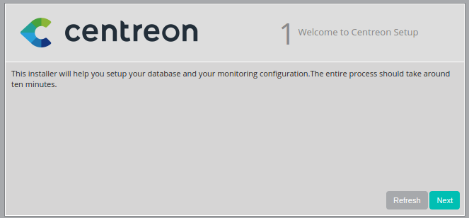
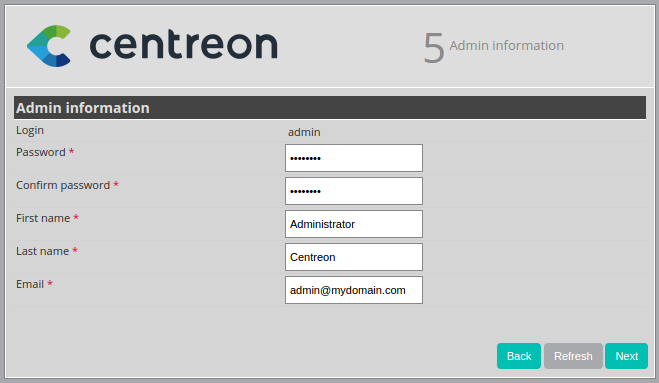
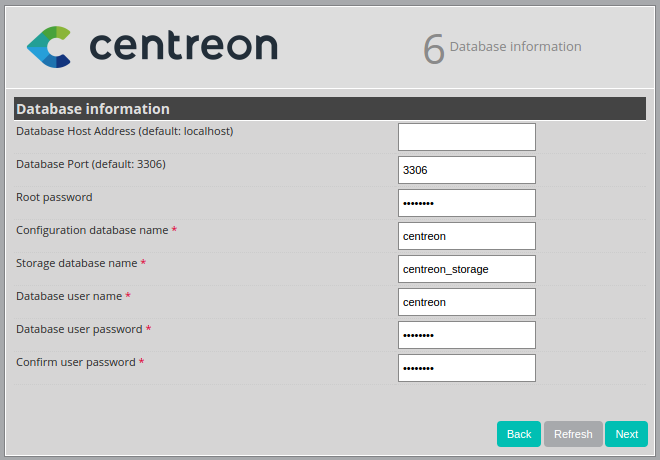
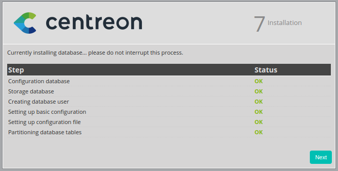
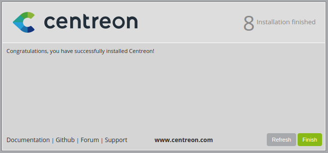
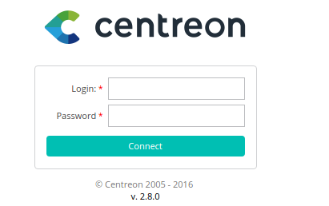

官方
介绍
Centreon是一款功能强大的分布式IT监控系统，它通过第三方组件可以实现对网络、操作系统和应用程序的监控
首先，它是开源的，我们可以免费使用它；其次，它的底层采用nagios作为监控软件，同时nagios通过ndoutil模块将监控到的数据定时写入数据库中，而Centreon实时从数据库读取该数据并通过Web界面展现监控数据；，最后，我们可以通过Centreon管理和配置nagios，或者说Centreon就是nagios的一个管理配置工具，通过Centreon提供的Web配置界面，可以轻松完成nagios的各种繁琐配置。
此外，Centreon还支持NRPE、SNMP、NSClient等插件，可以通过这些插件构建分布式的监控报警系统。
依赖环境
- 数据库(MariaDB和MySQL任选其一)
| Software | Version |
|---|---|
| MariaDB | >= 5.5.48 |
| MySQL | >= 5.6.x |
- 依赖软件
| Software | Version |
|---|---|
| Apache | 2.2 |
| GnuTLS | >= 2.0 |
| Net-SNMP | 5.5 |
| openssl | >= 1.0.1e |
| PHP | >= 5.3.0 |
| Qt | >= 4.7.4 |
| RRDtools | 1.4.7 |
| zlib | 1.2.3 |
安装
获取官方yum源
1 | $ wget http://yum.centreon.com/standard/3.4/el7/stable/noarch/RPMS/centreon-release-3.4-4.el7.centos.noarch.rpm |
安装web端
1 | $ yum install centreon-base-config-centreon-engine centreon |
安装engine
1 | $ yum install centreon-engine |
web安装
- 开始安装，直接点Next
 - 检测模块是否安装,yum安装默认全部安装，点Next

- 服务端模块安装位置，一般默认，点Next

- 客户端模块安装位置，一般默认，点Next

- centreon管理员设置，用户admin，密码和其他信息自定，填好点Next
 数据库设置，设置MySQL信息，点Next

这里一般需要在MySQL配置里加入下列参数1
2[mysqld]
innodb_file_per_table=1数据库创建，完成后点Next
- 安装完成，点Finish

- 输入管理员账号密码登录
